| 如下图所示：用操作键盘结合显示屏可以进行数控系统操作
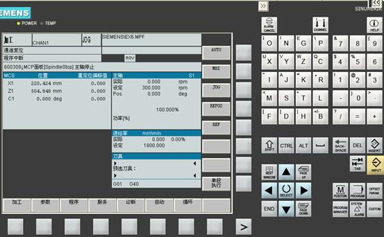
OP 010面板
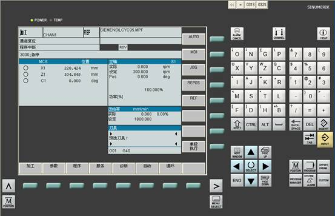
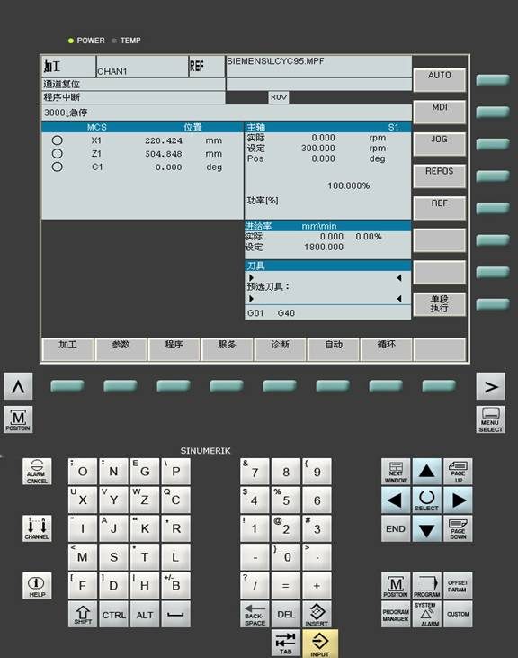
OP 031面板
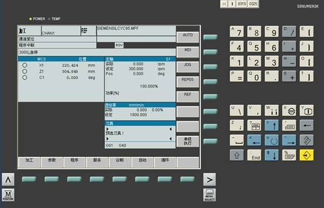
OP 032S面板
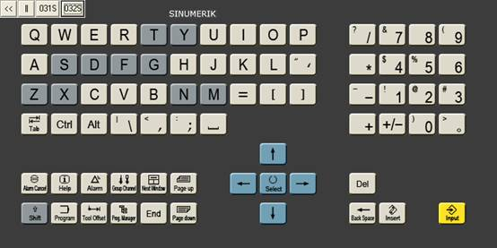
数字 / 字母键用于输入数据到输入区（如下图所示），系统自动判别取字母还是取数字。
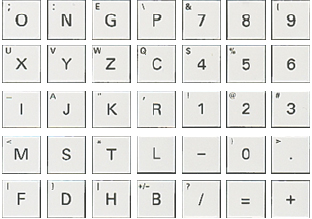
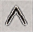 返回键 |
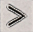 菜单扩展键 |
报警应答键 |
通道转换键 |
信息键 |
上档键 |
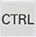 控制键 |
ALT 键 |
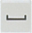 空格键 |
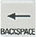 删除键 ( 退格键 ) |
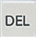 删除键 |
插入键 |
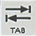 制表键 |
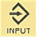 回车 / 输入键 |
加工操作区域键 |
程序操作区域键 |
参数操作区域键 |
程序管理操作区域键 |
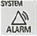 报警 / 系统操作区域键 |
未使用 |
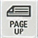 翻页键 |
光标键 |
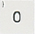 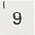 数字键 , 上档键转换对应字符 |
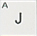 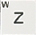 字母键，上档键转换对应字符 |
选择 / 转换键 ( 当光标后有 时使用 ) |
|